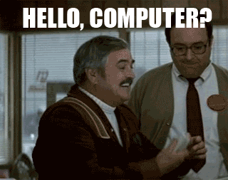
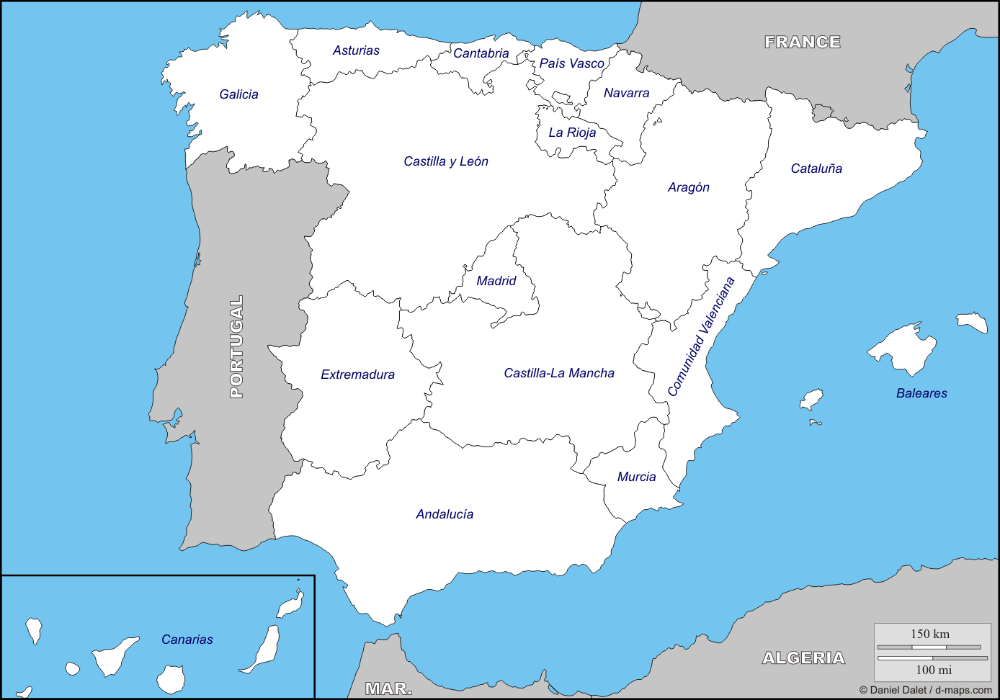

En este documento aprenderemos el manejo básico de los lenguajes de marcas HTML5 y CSS3
La sintaxis de elementos de HTML5 es <elemento> </elemento> , el primero es para abrir el elemento y el segundo para cerrarlo, algunos elementos especificos no es necesario cerrarlos.
Lo primero que tenemos que hacer a la hora de crear un documento es especificar de que tipo de documento se trata para que el navegador web pueda interpretarlo para ello nuestra primera línea de código debe contener lo siguiente:
<!doctype html>
Con eso decimos al navegador que el documento es de tipo html
A continuación debemos especificar el inicio del documento con el idioma de la página <html lang="idioma">, una cabecera <head>, un cuerpo <body>
<!doctype html>
<html lang=“es”><head>
</head><body>
</body></html>
El nombre del documento que veremos en la pestaña del navegador:
<!doctype html>
<html lang=“es”><head>
<title>el nombre de mi documento</title></head>
<body></body>
</html>
Utilizados para incluir cualquier información relevante de la propia página, por ejemplo la codificación de caracteres utilizada y el nombre del autor. Los metadatos no hay que cerrarlos
<!doctype html>
<html lang=“es”><head>
<title>documento de prueba</title>
<meta charset="utf-8"><meta name="author" content="nombre del autor">
</head><body>
</body></html>
Los artículos y secciones son una forma de dividir el documento en distintas partes, un artículo puede tener una varias secciones, pero una seccion puede contener un artículo o varios. Su estructura es la siguiente:
<article>
<section><article>
</article><article>
</article></section>
</article>
Utilizados para crear títulos a los apartados la sintaxsis es <hnumero>texto</hnumero> el numero puede ser de 1 a 6 que determinará el nivel del texto:
El texto en html se divide mediante parrafos <p>texto</p>
Este es el primer parrafo
Este es el segundo parrafo
El texto preformateado <pre> aparecerá el texto con el mismo formato utilizando un tipo de letra monoespaciada:
puedo poner el texto que yo quiera sin necesidad de saltos de linea incluso puedo dejar espacios entre lineas
Como su nombre indica es para hacer listas <li> y pueden ser ordenadas <ol> o desordenadas <ul>, las listas van dentro de ordenadas o desordenadas. La listas ordenadas las ordena por defecto con un número delante del elemento de la lista, se puede especificar que empiece por un numero <ol start=numero> o por tipo de orden <ol type=elemento>
Utilizada visualmente para dividir <hr> esta etiqueta no debe ser cerrada
Parrafo1
Parrafo2
STRESS EMPHASIS: <em>
Recalca una "parte del texto"
STRONG <strong>
El texto tiene mucho contenido pero podemos destacar "la parte que realmente nos importa"
SMALL <small>
La utilizaremos cuando queramos usar la letra "pequeña" para un contrato
S <s>
sirve para representar contenido irrelevante u obsoleto esta mañana he desayunado chocolate con churros
Bastardilla <i>
Para mostrar el texto en cursiva
Negrita <b>
Texto en negrita
Subrayado <u>
Texto subrayado
el texto pueden tener saltos de linea con <br>texto para salto de linea</br>:
Esto es un texto con un
salto de linea
Si el texto es muy largo con <wbr si una palabra o texto no cabe salta al a siguiente linea
Aqui empieza el texto largo:
Utilizado para enlazar direcciones, por ejemplo si haces click Aquí te llevará a google
Los enlaces pueden ser absolutos (especificando la ruta completa o dirección del contenido a enlazar) o relativo en caso del mismo directorio pondremos solo el nombre del archivo, si está en un subdirectorio "subdirectorio/archivo" y si está en el directorio anterior "../archivo"
Absoluto: Google
Relativo: ¡Pinchame si!
Hiperenlace interno <a href=#eltoX>
Utilizado para enlazar partes internas del documento, si pones #top te lleva al principio del documento, para poder enlazar las partes internas a los elementos hay que asignarles una id <elto id=eltoX>
Atributos para hiperenlace:
Entre los tipos de imágen tenemos los bimap estáticos (PNG, GIF, JPG), documentos vectoriales (SVG), animados (APNG, GIF) y otros (PDF, MNG)
Estática:
Vectorial:
Animada:
Atributos de una imagen:
Los mapas de imágen son imágenes en las cuales hemos introducido enlaces según las coordenadas
Para utilizar una imágen con mapeado debemos añadirle la etiqueta usemap="#idmapa", después tenemso que usar la etiqueta <map> con el atributo name=idmapa que hemos asignado anteriormente a la imágen
Dentro del mapa tenemos que asignar las areas que queremos asignarles un enlace con le etiqueta <area>, esta etiqueta puede tenerl os siguientes atributos:
Un ejemplo de un mapa de imágen, las areas están definidas en los nombres de las comunidades (Galicia, Asturias, Cantabria)
Utilizados para representar caracteres especiales, Aqui la lista de todos ellos
Para representar una tabla lo primero que tenemos que hacer es crear el elemento <table>, dentro del elemento table hay que definir las filas <tr> y dentro de las filas hay que definir las columnas <td>, la tabla puede contener cabeceras <thead> tanto en filas como en columnas
| dias de la semana | Lunes | Martes | Miercoles | Jueves | Viernes | Sabado | Domingo |
|---|---|---|---|---|---|---|---|
| semana 1 | 1 | 2 | 3 | 4 | 5 | 6 | 7 |
| semana 2 | 8 | 9 | 10 | 11 | 12 | 13 | 14 |
las tablas pueden contener un encabezado <thead>, un cuerpo <tbody>, un sumario <tfoot> y una leyenda <caption>
Los atributos de una tabla son:
{kind=link}